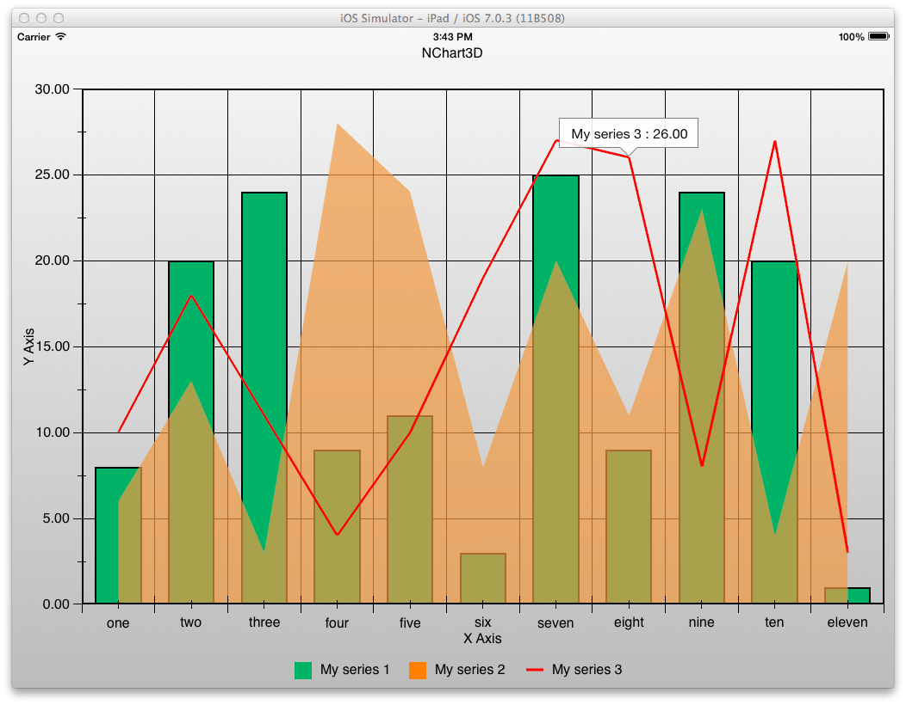
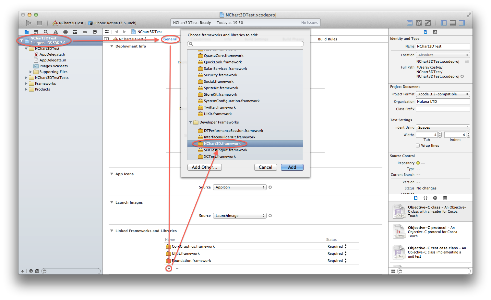
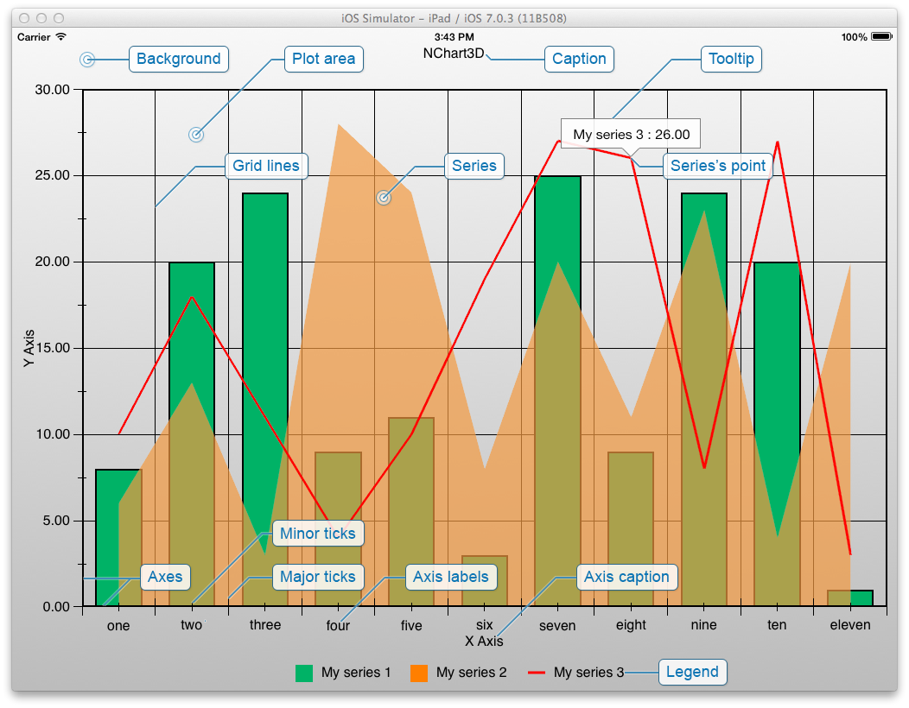
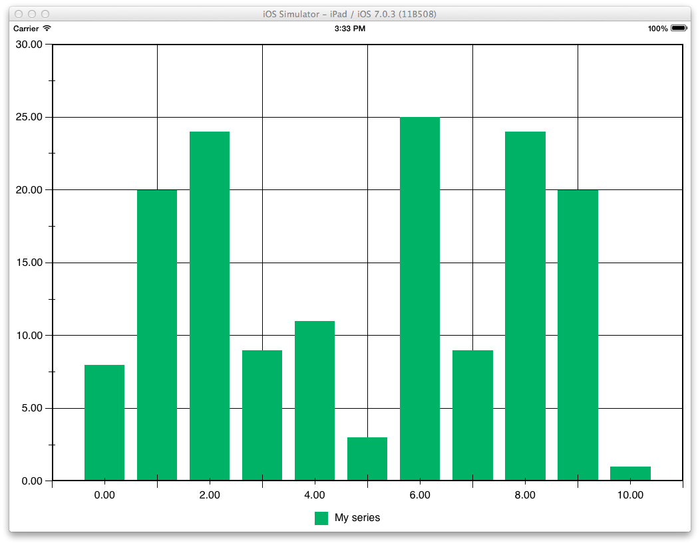
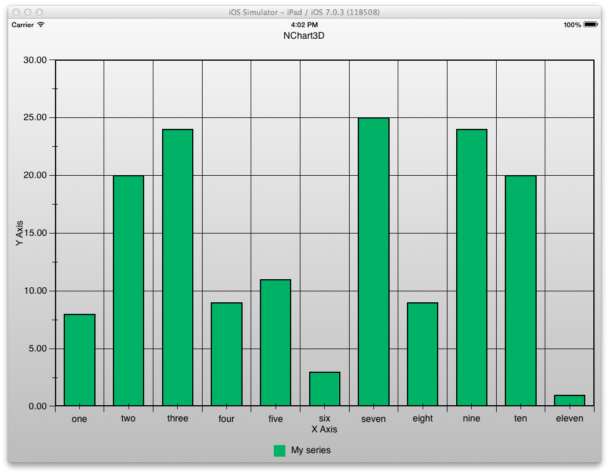
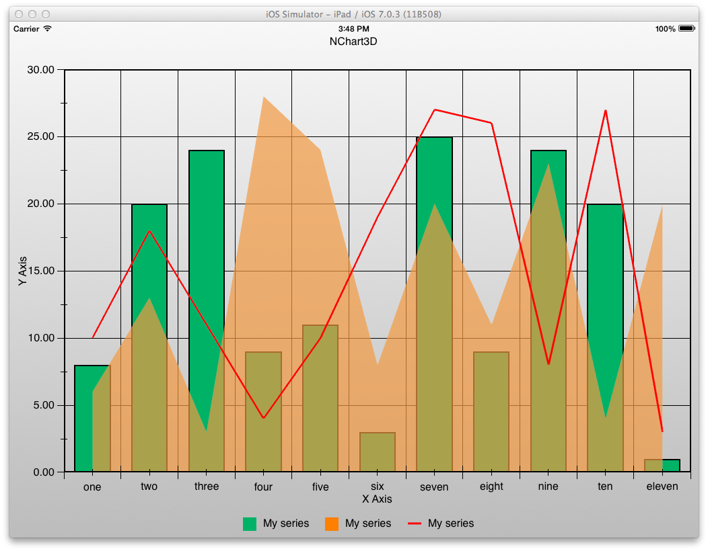

NChart3D Tutorial
Overview
This documentation provides a short tutorial that will explain the main concepts of the NChart3D framework as well as show you how to draw charts using NChart3D.
NChart3D is a versatile charting engine for iOS that allows you to draw 2D and 3D interactive charts of different types according your data.
The usage of NChart3D is very simple and requires only a few lines of code to visualize your data in a convenient and beautiful form.
Introduction
This tutorial will show you how to install NChart3D framework and build a simple project that displays some random data, how to customize the appearance of charts and how to manage the selection of data. This tutorial is partially based on the samples provided on the NChart3D OS X .dmg that can be downloaded here.
At the end of this tutorial you will be able to create a simple application that looks like this:

Installation
First, download the NChart3D OS X .dmg. It is recommended to install the framework that will allow you to add it from the "Developer Frameworks" section in Xcode. To do so, run "Install.pkg". The documentation will be installed to Xcode automatically with the framework. Alternatively you can just copy the framework to your disk and then link it through the "Add Other" option. The framework is located in the "NChart3D.framework" directory, the documentation is located in the "Documentation" directory and the set of samples is located in the "NChart3D/Samples" directory.
For each sample the Xcode-projects are already created, so you can check them out to see whether everything works properly.
However, in this tutorial you will learn how to create a project from scratch. Let’s begin!
Create a new project of the "Empty Application" type.
If you installed the framework properly, you should be able to link it to your application in the usual way. Click the top-level element in your project’s tree (it contains the name of your project), select the tab "General", scroll down add hit the "+" button. Than find the NChart3D.framework that should be in the "Developer Frameworks" section.

Double click on it, and it will be linked to your project.
Also add a libstdc++.dylib library to your project in the same way (it can by found in the "iOS xxx" section).
Make a test-run to check whether the project is able to build and run.
Now your project is set up and you can start using the NChart3D framework!
Please note, that we are using ARC for the project that we describe here, but you can manage memory manually in your projects, if you want to — NChart3D supports both cases.
Anatomy of Charts
Before we start, let’s explain a little bit of terminology.

- Background — the color or gradient that fills the background.
- Caption — the text label (that can have background and border) that is displayed on top of the chart.
- Legend — the scrollable widget that contains the names and marker images of all the series on the chart.
- Plot area — the area where the series are drawn.
- Axes — axes that surrounds the plot area.
- Axes ticks — ticks that divide axes into pieces. There are major and minor ticks.
- Axes grid lines — lines on the plot area that are parallel to the axes and start in the major ticks.
- Axes labels — labels of the axes ticks.
- Axes captions — captions of the axes.
- Series — data visualizers.
- Series’ points — individual values in the series.
- Tooltip — a label on the chart displaying information about the chart point.
Drawing a Simple Chart
Let’s draw a simple chart. First, create a new UIViewController’s subclass and call it, for example, NChart3DTestViewController. Do not forget to set its instance as a root view controller to the main window in the application:didFinishLaunchingWithOptions: method of AppDelegate as follows:
self.window.rootViewController = [NChart3DTestViewController new];#import <NChart3D/NChart3D.h>NChart3DTestViewController.h file. This will include everything that is needed to operate with NChart3D framework.After that, add the internal field
m_view of the NChartView * type to the NChart3DTestViewController, override the loadView method of NChart3DTestViewController and create there the new instance of the NChartView class like this:- (void)loadView
{
m_view = [[NChartView alloc] initWithFrame:CGRectZero];
self.view = m_view;
}m_view.chart property.If you have a license key, set it to the chart like this:
m_view.chart.licenseKey = @"Your license key";m_view.chart.cartesianSystem.margin = NChartMarginMake(10.0f, 10.0f, 10.0f, 20.0f);Now you may switch on anti-aliasing (that is off by default). It will not hurt performance, because the anti-aliasing algorithm is adaptive, so it is recommended to switch it on to get better visual quality of the image. Add the following line of code:
m_view.chart.shouldAntialias = YES;NChartColumnSeries *series = [NChartColumnSeries new];
series.brush = [NChartSolidColorBrush solidColorBrushWithColor:[UIColor colorWithRed:0.0 green:0.7 blue:0.4 alpha:1.0]];There is a protocol called NChartSeriesDataSource that you should implement to build a data source. For example, you can make a data source from
NChart3DTestViewController simply by adding the reference to the protocol in the NChart3DTestViewController.h file as follows:@interface NChart3DTestViewController : UIViewController <NChartSeriesDataSource>- (NSArray *)seriesDataSourcePointsForSeries:(NChartSeries *)series
{
NSMutableArray *result = [NSMutableArray array];
for (int i = 0; i <= 10; ++i)
[result addObject:[NChartPoint pointWithState:[NChartPointState pointStateAlignedToXWithX:i Y:(rand() % 30) + 1] forSeries:series]];
return result;
}
- (NSString *)seriesDataSourceNameForSeries:(NChartSeries *)series
{
return @"My series";
}rand() function. Feel free to experiment with different values and see what happens.The second method generates names for series to allow NChart3D to build the legend.
Now, when the data source is ready, assign it to the series you have created and finally add series to the chart:
series.dataSource = self;
[m_view.chart addSeries:series];[m_view.chart updateData];
Customizing Appearance
As you can see, the values on the axes are calculated automatically. Let’s customize them and display some labels on the X axis! The axes as well as the series can have their own data sources. These data sources can supply custom minimums / maximums or custom strings for labels of the ticks.
Add a reference to the protocol NChartValueAxisDataSource to the NChart3DTestViewController:
@interface NChart3DTestViewController : UIViewController <NChartSeriesDataSource, NChartValueAxisDataSource>- (NSArray *)valueAxisDataSourceTicksForValueAxis:(NChartValueAxis *)axis
{
if (axis.kind == NChartValueAxisX)
return @[@"one", @"two", @"three", @"four", @"five", @"six", @"seven", @"eight", @"nine", @"ten", @"eleven"];
else
return nil;
}Let's also add captions to the axes. Implement the following method:
- (NSString *)valueAxisDataSourceNameForAxis:(NChartValueAxis *)axis
{
switch (axis.kind)
{
case NChartValueAxisX:
return @"X Axis";
case NChartValueAxisY:
return @"Y Axis";
default:
return nil;
}
}Of course, you should set the data source to the axes you want to customize. You can do this by adding the following line before your
updateData call:m_view.chart.cartesianSystem.xAxis.dataSource = self;
m_view.chart.cartesianSystem.yAxis.dataSource = self;background property:m_view.chart.background = [NChartLinearGradientBrush linearGradientBrushFromColor:[UIColor colorWithRed:0.7 green:0.7 blue:0.7 alpha:1.0] toColor:[UIColor whiteColor]];You can also add a border for your series, like this:
series.borderThickness = 2.0f;
series.borderBrush = [NChartSolidColorBrush solidColorBrushWithColor:[UIColor blackColor]];loadView method:m_view.chart.caption.margin = NChartMarginMake(0.0f, 0.0f, 0.0f, 20.0f);
m_view.chart.caption.text = @"NChart3D";You will get the following result:

Adding More Charts
Now let’s add more series to the chart.
Just create another series of different types, for example one area and one line. To do this, add the following code after the creation of the first series:
NChartAreaSeries *series2 = [NChartAreaSeries new];
series2.brush = [NChartSolidColorBrush solidColorBrushWithColor:[UIColor orangeColor]];
series2.brush.opacity = 0.7f;
series2.dataSource = self;
[m_view.chart addSeries:series2];
NChartLineSeries *series3 = [NChartLineSeries new];
series3.brush = [NChartSolidColorBrush solidColorBrushWithColor:[UIColor redColor]];
series3.lineThickness = 3.0f;
series3.dataSource = self;
[m_view.chart addSeries:series3];
As you can see, three series of different types appear on the chart. Wait, what? The names in the legend are all the same! Let’s fix it. First, add the tag for each series like this:
series.tag = 1;
series2.tag = 2;
series3.tag = 3;seriesDataSourceNameForSeries: method to the following:- (NSString *)seriesDataSourceNameForSeries:(NChartSeries *)series
{
return [NSString stringWithFormat:@"My series %d", series.tag];
}
This will add the numbers to the series’ names that appear in the legend.
Adding Tooltips
It’s time to add tooltips that will appear and disappear by tapping chart points and display some information, for example, the name of a series and the current Y value.
To handle which chart points are selected when tapped, NChartDelegate is used. Add the reference to this protocol to NChart3DTestViewController:
@interface NChart3DTestViewController : UIViewController <NChartSeriesDataSource, NChartValueAxisDataSource, NChartDelegate>- (void)chartDelegatePointOfChart:(NChart *)chart selected:(NChartPoint *)point
{
[m_prevSelectedPoint.tooltip setVisible:NO animated:0.25f];
if (point)
{
if (point.tooltip)
{
if (point == m_prevSelectedPoint)
m_prevSelectedPoint = nil;
else
{
m_prevSelectedPoint = point;
[self updateTooltipText:point];
[point.tooltip setVisible:YES animated:0.25f];
}
}
else
{
m_prevSelectedPoint = point;
point.tooltip = [self createTooltip];
[self updateTooltipText:point];
[point.tooltip setVisible:YES animated:0.25f];
}
}
else
{
m_prevSelectedPoint = nil;
}
}
- (void)chartDelegateTimeIndexOfChart:(NChart *)chart changedTo:(double)timeIndex
{
}
- (void)chartDelegateChartObject:(id)object didEndAnimating:(NChartAnimationType)animation
{
}To make this work, we should store the previously selected point somewhere. Let’s use internal variable called
m_prevSelectedPoint of type NChartPoint for that. Also we will need two additional methods to create and update a tooltip.
You may use some initial settings for the tooltip like this:
- (NChartTooltip *)createTooltip
{
NChartTooltip *result = [NChartTooltip new];
result.background = [NChartSolidColorBrush solidColorBrushWithColor:[UIColor whiteColor]];
result.background.opacity = 0.9f;
result.padding = NChartMarginMake(10.0f, 10.0f, 10.0f, 10.0f);
result.borderColor = [UIColor colorWithRed:0.5f green:0.5f blue:0.5f alpha:1.0f];
result.borderThickness = 1.0f;
result.font = [UIFont systemFontOfSize:16.0f];
return result;
}- (void)updateTooltipText:(NChartPoint *)point
{
point.tooltip.text = [NSString stringWithFormat:@"%@ : %.2f", point.series.name, point.currentState.doubleY];
}Finally set the delegate for chart by adding the following line to the
loadView method:m_view.chart.delegate = self;What's next?
You can find more information about using the NChart3D framework in samples on the OS X .dmg. If you have any questions, feel free to contact us.